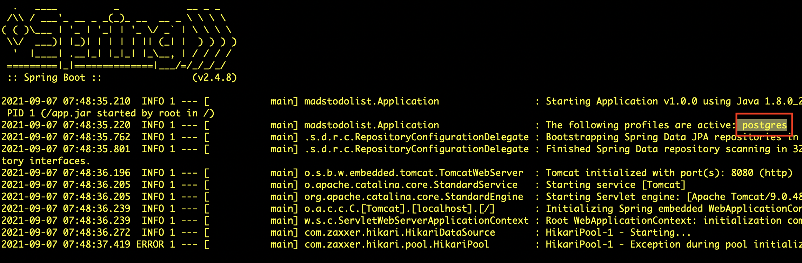
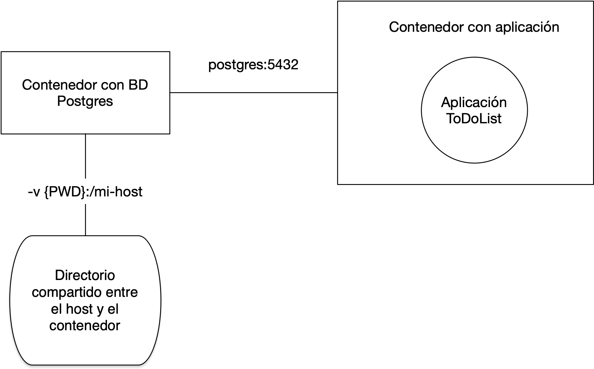

Práctica 4: Trabajo en equipo con GitFlow y despliegue en producción¶
1. Objetivos y resumen de la práctica¶
En esta práctica se pretende conseguir:
- Crear los equipos de trabajo en GitHub.
- Adaptar el flujo de trabajo en Git y GitHub al trabajo en equipo.
- Desplegar la aplicación usando una base de datos de producción y mantener esta base de datos.
- Implementar GitFlow:
- Desarrollar nuevas features con GitFlow.
- Lanzamiento de una versión nueva usando GitFlow.
2. Formación de equipos¶
En esta práctica comenzamos a trabajar en equipos de 3 personas.
Cada equipo trabajará con un repositorio común seleccionado de uno de los miembros del equipo. Utilizaremos GitHub Classroom para crear el team y el repositorio.
Pasos a seguir¶
-
Debéis formar equipos de 3 personas.
De forma excepcional, será posible crear equipos de 2 ó 4 personas. En esta práctica y en la siguiente se deberá adaptar la cantidad de trabajo y funcionalidades implementadas en función del número de personas del equipo.
Enviad los componentes al foro de Moodle y os asignaré un nombre de equipo. Utilizad después el enlace de GitHub Classroom que enviaré al foro de Moodle para crear el equipo y apuntaros a él.
El primero que use el enlace debe crear el repositorio, escribiendo el nombre del equipo, como se muestra en la siguiente imagen.

El equipo trabajará con un repositorio creado por GitHub Classroom con el nombre
todolist--NOMBRE-EQUIPO. Al igual que en la práctica 2, el repositorio se creará en la organizaciónmads-ua-22-23.
Una vez que la primera persona ha creado el equipo y el repositorio, las siguientes personas que usan el enlace pueden unirse al equipo creado o crear un nuevo equipo:

-
Una vez creado el repositorio debéis crear en él un tablero para gestionar las tarjetas con los issues y los pull requests. Creadlos con las mismas columnas que en las prácticas 2 y 3.
-
Escoged el proyecto que vais a usar como punto de partida de estas dos últimas prácticas de entre los proyectos de los miembros del equipo. Intentad que se un proyecto con código limpio y fácilmente ampliable.
Subidlo al nuevo repositorio, cambiando la URL del
origindel repositorio local y haciendo un push:Por último, los otros miembros del equipo deberán clonar el repositorio para que los tres podáis trabajar con él en local.$ git remote set-url origin https://github.com/mads-ua-22-23/todolist-NOMBRE-EQUIPO.git $ git push -u origin main -
Cambiad el nombre del proyecto (en el fichero
POM.xmly en elabout.htmlatodolist-equipo-XX.Haced un commit directamente en
maincon estos cambios. Comprobad que GitHub Actions sigue funcionando correctamente.
3. Nuevo flujo de trabajo para los issues¶
Debemos adaptar el flujo de trabajo en GitHub al trabajo en equipo. En cuanto a la gestión de los issues y tablero del proyecto cambiaremos lo siguiente:
- Selección del issue: Al pasar un issue de
To doaIn progressse debe asignar un responsable del desarrollo del issue. - Nueva rama con el issue: El responsable seleccionado será el que abra una rama nueva para el desarrollo del ticket y la subirá a GitHub.
- Desarrollo: Se trabaja en la rama. Cualquier compañero puede unirse al ticket y trabajar junto con el responsable, trabajando sobre la rama.
- Pull request: Cuando el ticket se ha terminado, el responsable
abre un pull request en GitHub y pone la tarjeta en la columna
In pull request. -
Revisión de código: Debéis configurar la opción de GitHub que obliga a que haya un mínimo de 1 revisor en el pull request.
Los miembros del equipo revisan el código en el pull request (consultar documentación en GitHub: Reviewing proposed changes in a pull request). Al menos uno de los miembros del equipo debe dar el visto bueno al PR, añadiendo una reacción.
-
Integración del pull request: Cuando un miembro da el OK, el responsable de la tarea integra el pull request.
Para implementar el trabajo en equipo será necesario trabajar sobre ramas remotas compartidas. A continuación explicamos con más detalle algunos aspectos comandos de Git necesarios.
Comandos Git¶
Veamos algunos comandos de Git relacionados con el trabajo compartido en repositorios y ramas remotas.
-
Subir una rama al repositorio remoto (el responsable del issue):
$ git checkout -b nueva-rama $ git push -u origin nueva-rama -
Descargar por primera vez una rama del repositorio remoto y moverse a ella (el resto de miembros del equipo):
$ (main) git pull * [nueva rama] nueva-rama -> origin/nueva-rama $ (main) git branch -r (comprobamos las ramas remotas asegurarnos) $ (main) git checkout nueva-rama rama 'nueva-rama' configurada para rastrear 'origin/nueva-rama'. Cambiado a nueva rama 'nueva-rama' $ (nueva-rama) -
Subir cambios de la rama remota:
$ (nueva-rama) git add . $ (nueva-rama) git commit -m "Mis cambios" $ (nueva-rama) git pushSi algún compañero ha subido cambios a la rama remota que tenemos pendientes de descargar, al hacer un
git pushtendremos un error en el que nos indica que debemos hacer antes ungit pull:% (nueva-rama) git push To https://github.com/domingogallardo/prueba-clase.git ! [rejected] nueva-rama -> nueva-rama (fetch first) error: falló el push de algunas referencias a 'https://github.com/domingogallardo/prueba-clase.git' ayuda: Actualizaciones fueron rechazadas porque el remoto contiene trabajo que ayuda: no existe localmente. Esto es causado usualmente por otro repositorio ayuda: realizando push a la misma ref. Quizás quieras integrar primero los cambios ayuda: remotos (ej. 'git pull ...') antes de volver a hacer push.Puede ser que al hacer
git pullnos aparezca el siguiente mensaje de error:% (nueva-rama) git pull ayuda: Hacer un pull sin especificar cómo reconciliar las ramas es poco ayuda: recomendable. Puedes eliminar este mensaje usando uno de los ayuda: siguientes comandos antes de tu siguiente pull: ayuda: ayuda: git config pull.rebase false # hacer merge (estrategia por defecto) ayuda: git config pull.rebase true # aplicar rebase ayuda: git config pull.ff only # aplicar solo fast-forward ayuda: ayuda: Puedes reemplazar "git config" con "git config --global" para aplicar ayuda: la preferencia en todos los repositorios. Puedes también pasar --rebase, ayuda: --no-rebase, o --ff-only en el comando para sobrescribir la configuración ayuda: por defecto en cada invocación. fatal: Necesita especificar cómo reconciliar las ramas divergentes.Debemos especificar entonces cómo se van a mezclar los cambios que se bajan de la rama remota con los cambios locales. Para ello elegimos la primera opción, que no se haga un rebase sino un merge:
$ (nueva-rama) git config pull.rebase falseAhora ya funciona el
git pull(hará un merge de la rama remota con la rama local):$ (nueva-rama) git pull (aparecerá un editor en el que tenemos que especificar el mensaje del commit de merge, grabar y salir)Y ahora ya podemos hacer
push. Se subirán nuestros cambios y el commit de merge:$ (nueva-rama) git push -
Comprobar el estado de las ramas locales:
$ git branch -vvCon la opción
-a(git branch -vva) se muestra también el estado de las ramas remote tracking de solo lectura (en rojo, y precedidas con el nombreremotes/):$ git branch -vva main dd867ac [origin/main] Colocados esquemas en su directorio * prueba 8d2d093 [origin/prueba] Corrección remotes/origin/HEAD -> origin/main remotes/origin/main dd867ac Colocados esquemas en su directorio remotes/origin/prueba 8d2d093 CorrecciónEste comando no accede directamente al servidor, sino que muestra la información de la última vez que se accedió a él. Si queremos la información actualizada podemos hacer un
git fetch --allantes:$ git fetch --all $ git branch -vvaEs importante recordar que
git fetch(a diferencia degit pull) no modifica los repositorios locales, sino que actualiza las ramas remote tracking. -
Comprobar cambios remotos: podemos comprobar si algún compañero ha subido algún commit a alguna rama, y comprobar esos cambios antes de hacer un
merge:$ (main) git fetch --all * Los cambios se descargan a las ramas locales origin/nueva-rama $ (main) git diff nueva-rama origin/nueva-rama $ (main) git checkout nueva-rama $ (nueva-rama) git merge origin/nueva-rama -
Solución de conflictos en un merge:
Supongamos que hay un conflicto al mezclar los cambios remotos del compañero en la nueva rama (haciendo
git pullogit merge). Git detectará el conflicto, modificará los ficheros en conflicto y deberemos editarlos para quedarnos con los cambios deseados:$ (nueva-rama) git pull (o git merge origin/nueva-rama) CONFLICTO (contenido): Conflicto de fusión en README.md Fusión automática falló; arregle los conflictos y luego realice un commit con el resultado. $ git status Tienes rutas no fusionadas. (arregla los conflictos y ejecuta "git commit" (usa "git merge --abort" para abortar la fusion) Rutas no fusionadas: (usa "git add <archivo>..." para marcar una resolución) modificados por ambos: README.md # Editamos los ficheros en conflicto y nos quedamos con los cambios deseados $ git add . $ git commit -m "Arreglado conflicto" $ git pushY el resto de compañeros deberán hacer un
git pullpara actualizar sus ramas locales. -
Información de los repositorios remotos:
$ git remote show originProporciona información del repositorio remoto, todas sus ramas, del local y de la conexión entre ambos.
$ git remote -v updateProporciona información del estado de las ramas remotas y locales (si están actualizadas o hay cambios en algunas no bajadas o subidas).
-
Borrado de ramas remotas desde el terminal:
$ git push origin --delete nueva-rama $ git remote prune origin -
Si necesitamos en la rama de feature código que se haya añadido en la rama
main.Podemos hacer un merge de la rama
mainen la rama de feature para incorporar los avances de código que se han hecho enmainy que necesitamos en nuestra nueva rama:$ git checkout nueva-rama $ git merge main -
Solución de conflictos en un pull request:
Supongamos que en un pull request GitHub detecta un conflicto entre la nueva rama y la rama
main. En lugar de resolver el conflicto en GitHub es recomendable hacerlo en el repositorio local:$ git checkout main $ git pull $ git checkout nueva-rama $ git merge main # arreglar el conflicto $ git push # ya se puede hacer el merge en GitHub
Pasos a seguir¶
-
Añadid el milestone 1.3.0 y etiquetad todos los próximos issues con él. Vamos a probar el nuevo flujo de trabajo descrito anteriormente creando un nuevo issue denominado
Actualizar la página Acerca de. En la descripción de issue comentad que se debe modificar la página para que muestren todos los miembros del equipo y el nuevo número de versión de la aplicación (1.3.0-SNAPSHOT). -
Añadid la regla de que sea necesario un revisor en los pull requests. Para ello seleccionar Settings > Branches > Add branch protection rule, poned como patrón del nombre de rama el nombre completo
mainy seleccionad Require a pull request before merging y Require approvals. Poned 1 como número de revisores requeridos. -
Escoged una persona del equipo como responsable del issue. El responsable del issue será el responsable de integrarlo en
mainy de solucionar los conflictos que puedan surgir. -
Probad los comandos Git anteriores en una rama en la que se resuelva el issue. Cada miembro del equipo deberá descargar esa rama y realizar un commit en el que se añada su nombre a la lista de autores de la aplicación.
-
Cread un conflicto entre commits de dos miembros del equipo. Cambiar los dos la misma línea del fichero, haced commit (llamadlo "Provocando un conflicto") e intentad subir los commits a la rama. El último que lo haga no podrá, tendrá que hacer un
pully se generará un conflicto. Resolved el conflicto y subir el fichero corregido. -
Cread el pull request en GitHub, poniendo como responsable del PR al mismo responsable del issue.
-
Provocad otro conflicto y arregladlo. Para ello se debe añadir un commit en
mainque entre en conflicto con los cambios realizados en la rama. Podéis añadir el commit editando directamente el fichero en GitHub. Arreglad el conflicto tal y como se explica en el apartado anterior. -
Por último, revisad el código, aceptadlo e integrad el PR en main.
4. Contenedor con la aplicación ToDoList¶
Una de las cosas que vamos a hacer en esta práctica (en el siguiente apartado) es poner en producción en uno de vuestros ordenadores la aplicación ToDoList conectándola con la base de datos. En las prácticas 1 y 2 ya hemos construido el contenedor Docker de la aplicación, con el siguiente fichero Dockerfile:
FROM openjdk:8-jdk-alpine
COPY target/*.jar app.jar
ENTRYPOINT ["java","-Djava.security.egd=file:/dev/urandom","-jar","/app.jar"]
Este Dockerfile tiene un problema importante. El comando de ejecución es fijo y no permite definir ningún parámetro de ejecución. No es posible, por ejemplo, definir el perfil de Postgres, ni definir ningún parámetro de configuración.
Debemos cambiarlo de la siguiente forma:
FROM openjdk:8-jdk-alpine
COPY target/*.jar app.jar
ENTRYPOINT ["sh","-c","java -Djava.security.egd=file:/dev/urandom -jar /app.jar ${0} ${@}"]
De esta forma podremos llamar al comando docker añadiendo al final
parámetros que se van a pasar al comando java. La forma de añadir
variables de entorno a ese comando java es precediéndolos con dos
guiones --. Por ejemplo:
$ docker run --rm <usuario>/mads-todolist-equipoXX --spring.profiles.active=postgres --POSTGRES_HOST=host-prueba
Vamos a probarlo, creando y subiendo la nueva imagen a DockerHub y desplegándola en uno de vuestros ordenadores. Este despliegue es lo que haré yo para corregir la práctica.
Pasos a seguir¶
Debéis hacer lo siguiente:
-
Creamos un issue llamado
Configuración imagen dockery trabajamos en la ramaimagen-docker. -
Cambiad el fichero Dockerfile de la aplicación tal y como se indica en el listado anterior:
./DockerfileFROM openjdk:8-jdk-alpine COPY target/*.jar app.jar ENTRYPOINT ["sh","-c","java -Djava.security.egd=file:/dev/urandom -jar /app.jar ${0} ${@}"] -
Modificad el fichero en el directorio
maincon el perfilpostgrespara incluir la opción de usar variables de entorno, al igual que hicimos en el perfilpostgresde test.src/main/resources/application-postgres.propertiesPOSTGRES_HOST=localhost POSTGRES_PORT=5432 DB_USER=mads DB_PASSWD=mads spring.datasource.url=jdbc:postgresql://${POSTGRES_HOST}:${POSTGRES_PORT}/mads spring.datasource.username=${DB_USER} spring.datasource.password=${DB_PASSWD} spring.jpa.properties.hibernate.dialect = org.hibernate.dialect.PostgreSQL9Dialect -
Cread la nueva imagen Docker con el nombre
mads-todolist-equipoXXy la etiqueta1.3.0-snapshot. El usuario puede ser cualquier miembro del equipo, no es necesario que sea el autor del proyecto original.$ ./mvnw package $ docker build -t <usuario-docker>/mads-todolist-equipoXX:1.3.0-snapshot . -
Probad que funcionan correctamente los parámetros de configuración en la imagen Docker. Una forma sencilla de hacerlo es comprobar que se puede definir el perfil de Postgres y modificar alguno de sus parámetros. Deberá aparecer un mensaje de error de que no se puede conectar con la base de datos (lo que está bien, porque significa que sí que se ha cargado el perfil).
$ docker run --rm <usuario>/mads-todolist-equipoXX:1.3.0-snapshot --spring.profiles.active=postgres --POSTGRES_HOST=host-prueba

-
Subid, por último, la imagen a Docker Hub y cerrad el PR y el issue.
$ docker login $ docker push <usuario-docker>/mads-todolist-equipoXX:1.3.0-snapshot
5. Despliegue en producción con BD¶
Vamos a ver cómo ejecutar en producción el contenedor con la aplicación de forma que se conecte con una base de datos postgres.
En las prácticas 1 y 2 vimos cómo construir una versión en forma de contenedor de nuestra aplicación Spring Boot y en la práctica 3 vimos como usar un contenedor de Postgres para definir un servicio de base de datos con el que conectar la aplicación.
En esta práctica vamos a definir la configuración en producción definitiva de nuestra aplicación. Veremos cómo poner en marcha dos contenedores y conectarlos entre si. En nuestro caso un contenedor tendrá la base de datos postgres y el otro la aplicación Spring Boot.

La imagen anterior muestra los dos contenedores conectados por una
red. Desde el contenedor con la aplicación se accederá a la dirección
postgres:5432 para conectarse con la base de datos. Veremos los
comandos de docker para definir una red y para lanzar el contenedor de
base de datos en esa dirección de la red.
El contenedor de base de datos montará el directorio actual del host en el
directorio /mi-host del contenedor. De esta forma este directorio será
compartido y cualquier fichero que coloquemos en ese directorio del contenedor
será visible en el directorio actual del host (y viceversa). Usaremos este
directorio para guardar datos de la base de datos, como copias de seguridad o
ficheros de migración.
El contenedor de base de datos implementará la base de datos en producción.
Base de datos de producción
La base de datos de producción es la que mantiene los datos introducidos por los usuarios de la misma. Hay que prestar una atención especial a esta base de datos y definir políticas de respaldo y de control de cambios para evitar que se produzca cualquier pérdida de información. Veremos que una de las cuestiones que hay que asegurar es que la aplicación no puede modificar el esquema de datos de esta base de datos.
Habrá que definir también un flujo de trabajo para actualizar la base de datos de producción con los cambios del modelo de datos introducidos por la nuevas funcionalidades (nuevas tablas y nuevas relaciones).
Pasos a seguir¶
Veamos paso a paso cómo crear la configuración anterior en uno de vuestros ordenadores, que usaréis como ordenador de despliegue.
-
Creamos en nuestro ordenador de despliegue una red gestionada por Docker:
$ docker network create network-equipo -
Lanzamos el contenedor con la base de datos usando la red creada anteriormente y con el nombre
db-equipo. Definimos el nombre del host creado en el contenedor comopostgrescon el modificador--network-alias.$ docker run -d --network network-equipo --network-alias postgres -v ${PWD}:/mi-host --name db-equipo -e POSTGRES_USER=mads -e POSTGRES_PASSWORD=mads -e POSTGRES_DB=mads postgres:13El modificador
-vpermite montar el directorio actual en el directorio/mi-hostdel contenedor.Opción -v de Docker en Windows
Si estáis en Windows deberéis especificar el directorio actual explícitamente, sustituyendo las barras por barras dobles:
$ docker run -d --network network-equipo --network-alias postgres -v C:\\users\\domingo\\tmp:/mi-host --name db-equipo -e POSTGRES_USER=mads -e POSTGRES_PASSWORD=mads -e POSTGRES_DB=mads postgres:13Vamos a probar que funciona correctamente.
-
Nos conectamos al contenedor lanzando un
bashinteractivo. Estando en el contenedor creamos un fichero en el directorio/mi-host, salimos del contenedor y comprobamos que está en el directorio actual$ docker exec -it db-equipo bash root@e470db191dc6:/# cd /mi-host root@e470db191dc6:/mi-host# echo "Hola" > prueba.txt root@e470db191dc6:/mi-host# exit $ ls prueba.txt $ more prueba.txt Hola -
Con esto ya tenemos configurado y en marcha el contenedor con la base de datos Postgres. Esta va a ser nuestra base de datos de producción. Vamos ahora a poner en marcha la aplicación.
Descargamos la última versión de nuestra aplicación y lanzamos el contenedor usando la red definida anteriormente. Los modificadores
--spring.profiles.activey--POSTGRES_HOSTpermiten pasar al contenedor esas variables del entorno.$ docker pull <usuario>/mads-todolist-equipoXX:1.3.0-snapshot $ docker run --rm --network network-equipo -p8080:8080 <usuario>/mads-todolist-equipoXX:1.3.0-snapshot --spring.profiles.active=postgres --POSTGRES_HOST=postgres¡¡¡Enhorabuena!!! ¡Ya tenemos la aplicación en producción trabajando con la base de datos!
Podremos conectarnos a la aplicación usando el puerto 8080.
Probamos la aplicación y creamos algún usuario de prueba. Por último paramos el contenedor y lo volvemos a arrancar para comprobar que los datos son persistentes.
-
Para comprobar que la base de datos está funcionando correctamente podemos conectarnos al contenedor y examinar la base de datos
madsy alguna de sus tablas:$ docker exec -it db-equipo bash # psql -U mads -W mads (nos pedirá la contraseña: mads) # \l (lista las bases de datos) # \dt (lista las tablas) # SELECT * FROM usuarios;La base de datos se mantendrá mientras que no borremos el contenedor. Podemos pararlo y volver a ponerlo en marcha y seguiremos conservando los datos:
$ docker stop db-equipo $ docker start db-equipo
6. Perfil de producción y mantenimiento de la base de datos de producción¶
Perfil de producción¶
Una vez que vamos a trabajar en producción con una base de datos, esta base de datos será un elemento clave de la aplicación. No debemos bajo ningún concepto perder datos que se hayan introducido en ella, ya que son datos de nuestros usuarios y clientes.
Es imprescindible para ello cambiar el modo con el que la aplicación construye las tablas de la base de datos. Sabemos que nuestra aplicación está trabajando con JPA/Hibernate y que las tablas de la base de datos se construyen de forma automática. Si hay algún cambio en las entidades (se añade algún atributo o alguna nueva entidad) Spring Boot actualiza las tablas de la base de datos de forma automática cuando se lanza la aplicación. Esto es razonable si estamos trabajando en un entorno de desarrollo, pero está totalmente desaconsejado en un entorno de producción.
El parámetro spring.jpa.hibernate.ddl-auto es el que determina el
funcionamiento de la actualización de las tablas de la base de
datos. Su valor puede ser:
-
CREATE: El esquema de datos se crea de nuevo cada vez que se lanza la aplicación. Una vez creado, se añaden los datos definidos en el ficherodata.sqlsi elspring.sql.init.modetiene como valoralways. -
UPDATE: El esquema de datos de la base de datos se actualiza automáticamente cuando hay un cambio en las entidades de la aplicación. Así es como tenemos configurado el perfil por defecto de nuestra aplicación. Si estamos trabajando con la base de datos Postgres, se actualizará el esquema de datos. Pero esto no es recomendable para producción, porque no tenemos control de las instrucciones de actualización y pueden resultar en alguna pérdida de datos. -
VALIDATE: El esquema de datos de la base de datos se valida con respecto al esquema de datos definido por las entidades JPA. Si hay alguna diferencia, salta una excepción. Este es el valor que hay que usar cuando lanzamos la aplicación en producción.
Vamos a definir en la aplicación un nuevo perfil de ejecución, llamado
postgres-prod, en el que pondremos el valor del parámetro
spring.jpa.hibernate.ddl-auto a VALIDATE. Y será este el perfil
que usaremos para lanzar la aplicación en uno de vuestros ordenadores,
que hará de servidor de producción.
Mantenimiento de la base de datos de producción¶
En una aplicación en producción se deben configurar políticas estrictas de realización de copias de seguridad y de integridad de los datos. También en la gestión de las versiones y en la actualización del esquema de datos.
Esto último se denomina una migración de la base de datos y representa un elemento fundamental del mantenimiento en producción de una aplicación, sobre todo cuando estamos trabajando de una forma ágil e incremental. Es un tema avanzado muy importante, pero que no podemos abordar en la asignatura por falta de tiempo. Un par de referencias que os pueden ser de utilidad son el artículo Evolutionary Database Design y herramientas como Flyway que permiten automatizar las migraciones de la base de datos.
En la práctica vamos a trabajar con la base de datos de producción de dos formas:
- Realizaremos una copia de seguridad antes de instalar una nueva versión.
- Actualizaremos el esquema de datos aplicando un fichero de migración que construiremos manualmente.
Copias de seguridad¶
Si eliminamos el contenedor con la base de datos se perderán todos los
datos. Para evitar perder los datos, con el contenedor en marcha
podemos hacer una copia de seguridad de la base de datos mads en el
directorio compartido:
$ docker exec -it db-equipo bash
# pg_dump -U mads --clean mads > /mi-host/backup03092021.sql
La copia de seguridad se guarda en el directorio compartido. Podemos poner la fecha en el nombre del fichero. Por ejemplo, la copia anterior ha sido creada el 3 de septiembre del 2021.
Para restaurar una copia de seguridad basta con ejecutar el fichero SQL en la base de datos:
$ docker exec -it db-equipo bash
# psql -U mads mads < /mi-host/backup03092021.sql
# exit
Migración de la base de datos¶
Podemos obtener el esquema de datos de la aplicación (la definición de las tablas, sin los datos) conectándonos al contenedor y ejecutando el siguiente comando para guardar el fichero en el directorio compartido:
$ docker exec -it db-equipo bash
# pg_dump -U mads -s mads > /mi-host/schema.sql
# exit
Tendremos el esquema de datos en el directorio actual, que hemos montado en el contenedor con la instrucción -V.
Los esquemas son instrucciones SQL en texto plano. Supongamos que
tenemos una nueva versión de la aplicación (1.3.0) en la que hemos
añadido el atributo descripcion a la entidad Equipo.
Si generamos el esquema de datos de esta nueva versión y lo llamamos
schema-1.3.0.sql lo podemos comparar con el esquema anterior usando
el comando de linux diff:
% diff sql/schema-1.3.0.sql sql/schema-1.2.0.sql
41,42c41
< nombre character varying(255),
< descripcion character varying(255)
---
> nombre character varying(255)
Por ejemplo, en el ejemplo mostrado, el fichero schema-1.3.0.sql tiene un
campo adicional que el fichero schema-1.2.0.sql. Se trata del
campo descripcion. En la versión anterior (schema-1.2.0.sql) la
tabla equipo se define como:
CREATE TABLE public.equipos (
id bigint NOT NULL,
nombre character varying(255)
);
Mientras que en la versión nueva (schema-1.3.0.sql) se define como:
CREATE TABLE public.equipos (
id bigint NOT NULL,
nombre character varying(255),
descripcion character varying(255)
);
Si queremos migrar la base de datos de producción de una versión a otra, debemos crear un script de migración en el que modifiquemos únicamente el esquema de datos anterior para adaptarlo al nuevo.
En este caso el script lo llamaremos schema-1.2.0-1.3.0.sql y
contendrá únicamente la siguiente instrucción:
ALTER TABLE public.equipos
ADD COLUMN descripcion character varying(255)
Para actualizar la base de datos de producción sólo tenemos que ejecutar el script anterior:
$ docker exec -it db-equipo bash
$ psql -U mads mads < /mi-host/schema-1.2.0-1.3.0.sql
ALTER TABLE
$ exit
De esta forma habremos añadido manualmente un campo en la tabla
equipos.
La aplicación deberá funcionar ahora perfectamente si la lanzamos en
modo producción, definiendo la variable que hemos mencionado antes con
el modo validate:
spring.jpa.hibernate.ddl-auto=validate
Pasos a seguir¶
-
Creamos un issue llamado
Esquema de datos y perfil de produccióny trabajamos en la ramaesquema-datosy en el pull request equivalente.$ git checkout -b esquema-datos $ git push -u origin esquema-datos -
Lanzamos la aplicación en local con el modo
postgres, trabajando sobre la base de datos. Previamente hemos lanzado el contenedor postgres montando el directorio actual en su directorio/mi-host/:$ docker run -d -p 5432:5432 -v ${PWD}:/mi-host --name db-equipo -e POSTGRES_USER=mads -e POSTGRES_PASSWORD=mads -e POSTGRES_DB=mads postgres:13 $ ./mvnw spring-boot:run -D profiles=postgres -
Al lanzar la aplicación se habrá creado en la base de datos el esquema de datos. Lo generamos y lo salvamos en el directorio actual:
$ docker exec -it db-equipo bash # pg_dump -U mads -s mads > /mi-host/schema-1.2.0.sql # exit -
Comprobamos que el esquema de datos se ha creado correctamente y lo movemos al directorio
sqlen el directorio raíz:$ ls -l Dockerfile README.md mvnw mvnw.cmd pom.xml schema-1.2.0.sql src target $ mkdir sql $ mv schema-1.2.0.sql sql -
Creamos un commit con el nuevo fichero con el esquema de datos.
-
Creamos un nuevo fichero con el perfil de producción, que contiene exactamente la misma configuración del perfil postgres, excepto la propiedad
spring.jpa.hibernate.ddl-autoque tiene el valorvalidate.Fichero ``:
/src/main/resources/application-postgres-prod.propertiesPOSTGRES_HOST=localhost POSTGRES_PORT=5432 DB_USER=mads DB_PASSWD=mads spring.datasource.url=jdbc:postgresql://${POSTGRES_HOST}:${POSTGRES_PORT}/mads spring.datasource.username=${DB_USER} spring.datasource.password=${DB_PASSWD} spring.jpa.properties.hibernate.dialect = org.hibernate.dialect.PostgreSQL9Dialect spring.jpa.hibernate.ddl-auto=validate -
Probamos en local que el perfil funciona correctamente, lanzándolo:
$ ./mvnw spring-boot:run -D profiles=postgres-prodProbamos que realmente valida el esquema de datos, en lugar de actualizarlo. Para ello, paramos y borramos el contenedor postgres y lo lanzamos de nuevo. Esto creará una base de datos vacía:
$ docker container stop db-equipo $ docker container rm db-equipo $ docker run -d -p 5432:5432 -v ${PWD}:/mi-host --name db-equipo -e POSTGRES_USER=mads -e POSTGRES_PASSWORD=mads -e POSTGRES_DB=mads postgres:13Si ahora lanzamos la aplicación en modo
postgres-prodobtendremos un error:8. Actualizamos el contenedor postgres con el esquema de base de datos salvado anteriormente:$ ./mvnw spring-boot:run -D profiles=postgres-prod org.springframework.beans.factory.BeanCreationException: Error creating bean with name 'entityManagerFactory' defined in class path resource [org/springframework/boot/autoconfigure/orm/jpa/HibernateJpaConfiguration.class]: Invocation of init method failed; nested exception is javax.persistence.PersistenceException: [PersistenceUnit: default] Unable to build Hibernate SessionFactory; nested exception is org.hibernate.tool.schema.spi.SchemaManagementException: Schema-validation: missing table [equipo_usuario]$ docker exec -it db-equipo bash # psql -U mads mads < /mi-host/sql/schema-1.2.0.sql # exitY arrancamos la aplicación y comprobamos que ahora sí que funciona correctamente (la base de datos ya tiene el esquema de datos correcto).
-
Introducimos en la aplicación algunos datos de prueba y hacemos una copia de seguridad tal y como se explica anteriormente. Dejamos el fichero en el directorio
sqldel repositorio, indicando la fecha en el nombre del mismo. Por ejemplosql/backup15112022.sql. -
Hacemos un commit, subimos los cambios y cerramos el pull request y el issue.
7. Desarrollo de la nueva versión con GitFlow¶
El flujo de trabajo Git que vamos a seguir es muy similar al flujo de trabajo GitFlow (recordad la clase de teoría)
Ramas de largo recorrido¶
En GitFlow se publican las distintas versiones del proyecto en la rama
long-lived main y se hace el desarrollo en la rama
develop. A partir de ahora no desarrollaremos directamente en
main sino en develop.
En la página de configuración del repositorio en GitHub en Settings >
Branches > Default branch se puede configurar la rama por defecto
contra la que se realizarán los commits y la que aparecerá en la
página del proyecto. Tendréis que definir develop.
Ramas de feature¶
Desde el comienzo de trabajo con Git en las prácticas 2 y 3 estamos haciendo un desarrollo basado en ramas de corto recorrido, equivalentes a las ramas de features de GitFlow.
Tal y como se comenta en GitFLow estas ramas saldrán de develop y se
integrarán en develop. La diferencia es que en GitFlow estas ramas
se integran con la rama de desarrollo manualmente haciendo merge,
mientras que nosotros las integramos haciendo un pull request.
Pasos a seguir¶
-
Cread la rama
developy configurarla como rama principal del proyecto en GitHub. Añadir en los ajustes del repositorio la regla para obligar a revisar todos los PR que se mezclen en esta rama. Todos los otros miembros deberán descargarla y moverse a ella en sus repositorios locales. Esta rama pasará a ser la de desarrollo principal. -
Cread tres issues distintos, simulando tres nuevas funcionalidades. Deben ser issues sencillos, que no cuesten demasiado de implementar (mejorar algún defecto de la aplicación, cambiar algún elemento de alguna de las vistas, o algo similar). Uno de los cambios debe afectar a alguna entidad, por ejemplo añadir un campo de descripción a los equipos y actualizar las vistas correspondientes para permitir su inicialización y su actualización.
Cada uno de los miembros del equipo será el responsable de uno de los issues.
-
Configurad el repositorio GitHub para obligar a que cualquier pull request tenga que tener la revisión de una persona distinta del responsable del PR.
-
Desarrollad e integrar los issues en
developsiguiendo el flujo de trabajo planteado anteriormente. Debéis ir actualizando el tablero de GitHub se actualiza correctamente.
Rama de release¶
Hasta ahora hemos hecho los releases en la rama main. A partir
de ahora seguiremos la estrategia de GitFlow y haremos ramas de
release que salen de develop y se integran en main y en
develop.
Haremos también la integración haciendo pull request.
Una cosa importante que tendremos que hacer en el release es crear el guardar el de datos de la nueva versión y crear el script de migración de la base de datos.
Pasos a seguir¶
Vamos a probar el lanzamiento de una release usando el flujo de trabajo GitFlow.
-
Cread un issue con la tarea Lanzar release 1.3.0.
-
Siguiendo las indicaciones de GitFlow, crear la rama local
release-1.3.0a partir dedevelop. -
En esta rama se deben realizar los cambios específicos de la versión. En nuestro caso:
- Cambiar en la página
Acerca de"Versión 1.3.0-SNAPSHOT" a "Versión 1.3.0" y añadir la fecha de publicación. - Cambiar el fichero
pom.xml. - Generad el esquema de datos de la base de datos postgres
y guardarlo en
sql/schema-1.3.0.sql. - Comparar este esquema con el esquema anterior y crear el script
de migración con las instrucciones
ALTER TABLEnecesarias para actualizar la base de datos de producción de la versión 1.2.0 a la 1.3.0. Guardar el script ensql/schema-1.2.0-1.3.0.sql.
- Cambiar en la página
-
Comprobad que funciona correctamente el script de migración. Para ello deberéis simular que ponéis en marcha la aplicación en modo producción trabajando con una actualización de la base de datos:
- Poner en marcha una base de datos de producción vacía.
- Actualizar la base de datos con la copia de seguridad guardada en
el directorio
sql. - Actualizar la base de datos con el script de migración
sql/schema-1.2.0-1.3.0.sql, tal y como se explica en el apartado anterior. - Lanzar el contenedor de la aplicación con el perfil
postgres-prody comprobar que funciona correctamente la aplicación en producción y que se mantienen los datos anteriores. - Añadir nuevos datos y hacer una nueva copia de seguridad que se
debe guardar también en el directorio
src, con la fecha actual como nombre como hicimos anteriormente. Por ejemplo,src/backup-20112022.sql. - Haced un commit para añadir esta nueva copia de seguridad al repositorio.
-
Publicad la rama
release-1.3.0en GitHub y hacer un pull request sobremain. Una vez mezclado el PR añadir la etiqueta con la nueva versión1.3.0enmaincreando la página de release en GitHub. -
Mezclar también la rama de release con
develop(se puede hacer también con un PR). -
Subir la nueva versión de la imagen de docker a Docker Hub.
-
Una vez hecho esto ya se puede borrar la rama
release-1.3.0y las ramasmainydevelopestarán actualizadas a la nueva versión. -
Debemos comprobar que GitHub Actions pasa correctamente todos los tests de las nuevas características que se añaden.
9. Documentación, entrega y evaluación¶
Deberéis añadir una página de documentación /doc/practica4.md en la
que deberéis incluir:
- Breve documentación técnica de los cambios introducidos en la aplicación.
- Detalles del despliegue de producción. Esquemas de datos de las versiones 1.2.0 y de la versión 1.3.0. Script de migración de la base de datos.
- URL de la imagen Docker de la aplicación.
Entrega:
- La práctica tiene una duración de 2 semanas y debe estar terminada el martes 28 de noviembre.
- La calificación de la práctica tiene un peso de un 15% en la nota final de prácticas.
- Para realizar la entrega uno de los miembros del equipo debe subir a
Moodle un ZIP que contenga todo el proyecto, incluyendo el
directorio
.gitque contiene la historia Git. Para ello comprime tu directorio local del proyecto después de haber hecho unmvn cleanpara eliminar el directoriotargetque contiene los binarios compilados.
Para la evaluación se tendrá en cuenta:
- Desarrollo continuo (los commits deben realizarse a lo largo de las semanas y no dejar todo para la última).
- Correcto desarrollo de la metodología.
- Diseño e implementación del código y de los tests de las características desarrolladas.
- Funcionamiento de la aplicación con las bases de datos de producción y funcionamiento del script de migración.
- Documentación.